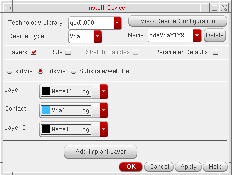
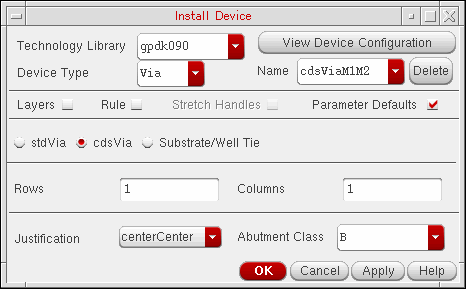

Installing a cdsVia Device in the Technology File
To install a cdsVia device in the technology file by using the Install Device form:
-
In the CIW, choose Tools – Technology File Manager.
The Technology File Manager window opens. -
Click Install Device in the Utilities section.
The Install Device form appears. -
From the Technology Library list, select the technology library in which you want to create the
cdsViadevice. - Select Via from the Device Type list.
- Select the cdsVia option.
-
In the Name field at the top of the form, specify the name of a new via device or select an existing via device from the list.
The following image shows the sample name ascdsViaM1M2. The form gets updated accordingly.
To delete an existing via device, select the via name from the Name list and click the Delete button. - With the Layers check box is selected, select the required layers from the Layer 1, Contact, and Layer 2 lists. For example, you can set the following:
-
Select the Rule check box.
Ensure that all fields are populated with values.
Notice that when you select the Rule check box, the Rules Browser window opens. If you place the pointer in any field, an arrow in the Rules Browser window indicates the physical area where the rule applies, as shown in the image.

-
Select the Parameter Defaults check box.
Ensure that all fields are populated with values. The Abutment Class field is optional for acdsViadevice.
 -
Click OK or Apply.
If you click Apply, a message appears in the CIW to let you know if there are any errors or whether thecdsViadevice has been created. If thecdsViadevice already exists in the technology file, you are prompted to confirm if you want to overwrite the existingcdsViadevice.
If you click OK, in addition to the message that appears in the CIW, you are prompted to confirm if you want to save the new rules to the technology file and then save the technology library to the disk. If you click Yes, the Install Device form closes.
You can check the DEVICES section in the technology file to confirm that the cdsVia device has been defined as per the values specified in the Install Device form.
Related Topics
Return to top